Вьетнам · Нячанг / Камрань
Памятка путешественника · 7–15 сентября 2026
SU 294 Шереметьево → Камрань 07.09 19:20 · SU 295 Камрань → Шереметьево 15.09 11:30
Radisson Blu Resort, Cam Ranh · трансфер: групповой автобус
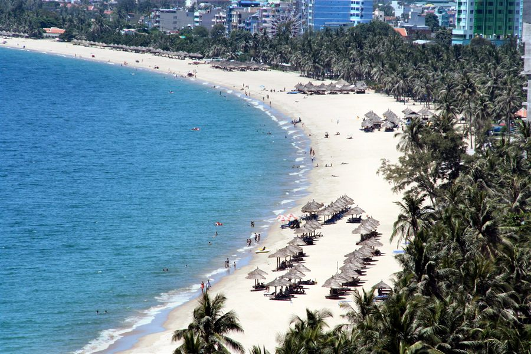
Пляж Нячанга
1. Перелёт
1.1. Расписание
| Туда | Обратно |
|---|
| Рейс | SU 294 (Аэрофлот) | SU 295 (Аэрофлот) |
| Дата | 07.09.2026, вылет 19:20 | 15.09.2026, вылет 11:30 |
| Аэропорт | Шереметьево (SVO) | Камрань (CXR) |
| Прилёт | Камрань 08.09 утром ~10:00 по местному | Шереметьево 15.09 ~18:00 по Москве |
- Время в полёте ~10.5–11 часов, разница с Москвой +4 часа.
- Внимание: из-за разницы часовых поясов прилетаешь в Камрань утром 8 сентября, хотя вылет 7-го вечером. Первый «полный» день в отеле — 8-е.
- Точно по билету сверь время прилёта в маршрут-квитанции.
1.2. Шереметьево (туда)
- Аэрофлот, международные рейсы — терминал C (проверь по табло, иногда меняют). Приезжай за 3 часа до вылета (~16:20).
- Онлайн-регистрация в приложении Аэрофлота открывается за 24 часа — займи место заранее, в аэропорту останется только сдать багаж.
- Нормы эконом-класса: багаж 23 кг + ручная кладь 10 кг + небольшая сумка. В ручную кладь — документы, деньги, аптечку, повербанк (в багаж повербанк нельзя), дождевик.
- Жидкости в ручной клади — до 100 мл в ёмкости, суммарно 1 л.
- Возьми с собой зарядку и наушники — на длинном рейсе пригодятся, в самолёте есть розетки/USB.
1.3. Прилёт в Камрань (CXR)
- Пограничный контроль: штамп по безвизовому въезду (до 45 дней), карточку прибытия заполнять не нужно.
- Багаж, выход в зал прилёта → гид/табличка туроператора с названием — групповой автобус до отеля (15–25 мин, по пути развозит несколько отелей Бай Дай).
- Если автобус не нашли — не паникуй: стойки туроператоров в зале прилёта, либо Grab до Radisson Blu (~250 тыс. VND).
- Сразу в аэропорту можно поменять мелкую сумму долларов на донги на чаевые/мелочь, основной обмен — позже в Нячанге по лучшему курсу.
- eSIM включится автоматически после посадки (данные включи).
1.4. Вылет домой (SU 295, 15.09 в 11:30)
- Групповой трансфер: время сбора объявит гид / ресепшн — обычно это ~07:00–07:30 утра. Уточни у стойки туроператора или на ресепшене накануне, 14 сентября — автобус собирает несколько отелей и ждать опоздавших не будет.
- Логика времени: подача в аэропорт за 2.5–3 часа до вылета (11:30) → в аэропорту надо быть ~08:30–09:00 → выезд из отеля рано утром. Позавтракать успеешь, если завтрак с 06:00–06:30; иначе возьми бокс-ланч (попроси на ресепшене заранее).
- Дьюти-фри в CXR скромный — сувениры/кофе лучше купить в Нячанге.
- Прилёт в Москву ~18:00 того же дня.
2. Погода в сентябре
Сентябрь — начало влажного сезона (дожди с сентября по декабрь). Всё ещё тепло, но возможны ливни и тайфуны в регионе (в основном в октябре–ноябре, город защищён островами).
| Показатель | Значение |
|---|
| Днём | ~28–32 °C |
| Ночью | ~25 °C |
| Вода в море | ~27–28 °C |
| Дождливых дней в сентябре | ~14 |
| Осадки за месяц | ~165 мм |
| Влажность | ~80 % |
Прогноз погоды на даты поездки (7–15 сентября)
Модель ECMWF — та же, что использует Windy. Данные на 28.08.2026.
| Дата | День | Погода | Температура | Дождь | Ветер |
|---|
| 7.09 | пн | Жарко, грозы к вечеру | | 88% · 3,6 мм | до 15 м/с |
| 8.09 | вт | Тепло, кратковременная морось | | 86% · 3,4 мм | до 14 м/с |
| 9.09 | ср | Дожди почти весь день | | 89% · 7,8 мм | до 7 м/с |
| 10.09 | чт | Сильный дождь — самый мокрый день | | 97% · 10,6 мм | до 6 м/с |
| 11.09 | пт | Грозы, много осадков | | 88% · 11,8 мм | до 4 м/с |
| 12.09 | сб | Дожди слабеют, прояснения | | 87% · 6,5 мм | до 11 м/с |
| 13.09 | вс | Дожди вероятны * | | ~85% * | — |
| 14.09 | пн | Переменная облачность, дожди * | | ~80% * | — |
| 15.09 | вт | Утро вылета, спокойно * | | ~75% * | — |
* Прогноз на 13–15 сентября пока за пределами горизонта модели — значения даны по климату сентября. Обнови перед вылетом на windy.com или open-meteo.com.
Как планировать: 7–8 сентября — самые тёплые дни: пляж с утра, грозы к вечеру. 9–11 — пик дождей: запланируй СПА, грязевые ванны, музей, кафе и поездку в Нячанг. С 12-го дожди ослабевают — пляж возвращается.
Что взять: лёгкую одежду, шлёпанцы, крем от солнца (SPF 50), дождевик/лёгкую ветровку, головной убор, репеллент. Дожди обычно короткие, ливни чаще во второй половине дня — планируй пляж на утро.
3. Деньги и курс
Курс на 28.08.2026: 1 USD ≈ 26 045 VND (донгов) · 1 RUB ≈ 86 руб. за доллар → 1 RUB ≈ 300 VND, 100 000 VND ≈ 330 руб.
- Российские карты (Мир/Visa/MC) во Вьетнаме НЕ работают. Бери с собой наличные доллары (лучше купюры $50/$100, чистые, без надрывов — курс на них выше).
- Меняй в Нячанге: ювелирные магазины (gold shops) дают лучший курс, затем банки. Не меняй в аэропорту/отеле — курс хуже.
- В крупных магазинах и отелях принимают карты (иностранные). В кафе/на рынке — только наличные.
- Банкоматы: TPBank, VPBank, BIDV, Sacombank — комиссия за снятие ~50–60 тыс. VND + % своего банка.
- Донги без копеек: цены пишутся часто в тысячах (100k = 100 000 VND).
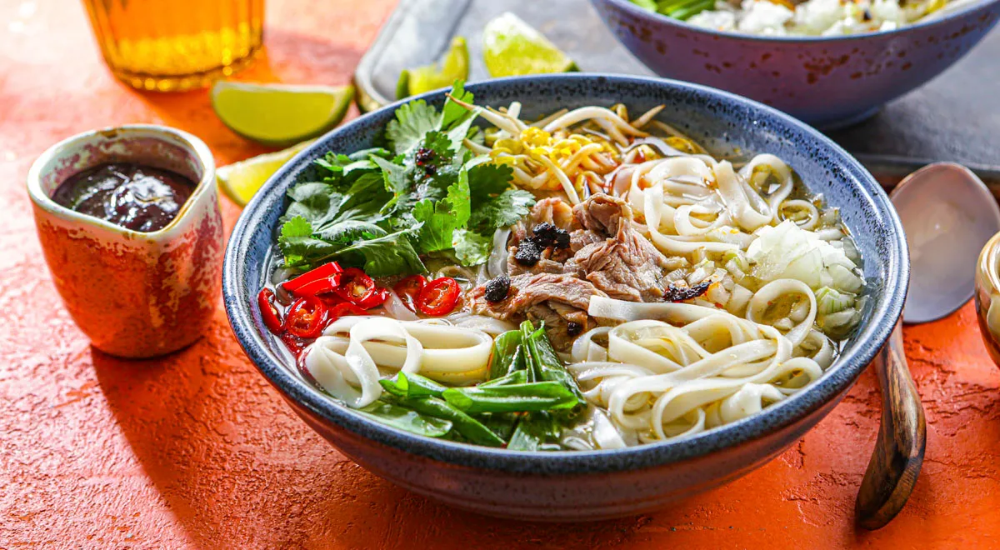
Фо бо — суп с говядиной, главное блюдо вьетнамской кухни
Ориентировочные цены (Нячанг)
| Что | Цена, VND | ~ Руб. |
|---|
| Уличный фо / бань ми | 30–60 тыс. | 100–200 |
| Ужин в местном ресторане | 150–300 тыс. | 500–1000 |
| Ужин в туристическом ресторане | 300–600 тыс. | 1000–2000 |
| Кофе (ка-фе-суа-да) | 20–50 тыс. | 70–170 |
| Пиво местное (Saigon/Huda) | 15–40 тыс. | 50–130 |
| Свежий кокос | 20–30 тыс. | 70–100 |
| Морепродукты на двоих (лангуст и пр.) | 500–1200 тыс. | 1700–4000 |
| Массаж 60–90 мин | 250–500 тыс. | 800–1700 |
| Поездка Grab по городу | 30–80 тыс. | 100–270 |
| Такси аэропорт Камрань → Нячанг | 350–500 тыс. | 1200–1700 |
| Экскурсия на острова (снорклинг) | 400–800 тыс. | 1300–2700 |
4. Камрань и вокруг отеля
- Radisson Blu Resort Cam Ranh стоит на пляже Бай Дай (Bai Dai / Long Beach) — длинный песчаный пляж южнее города, тихо, малолюдно, вся инфраструктура в отеле.
- Вокруг мало «города»: ближайшие развлечения — поездки в Нячанг (45–60 мин) или трансферы отеля. Для спокойного пляжного отдыха — идеально.
- Рядом: поля соляных промыслов Хон Хой (Hon Khoi Salt Fields) — живописно на рассвете.
- Чуть дальше: бухта Нинь Ван (Ninh Van Bay), «секретная» лагуна Бинь Лап (Binh Lap) — спокойная вода, снорклинг.
- Ближе к городу: грязевые источники I-Resort, Thap Ba Hot Springs и 100 Egg Mud Bath — обязательная программа для расслабления.
5. Отель: Radisson Blu Resort Cam Ranh
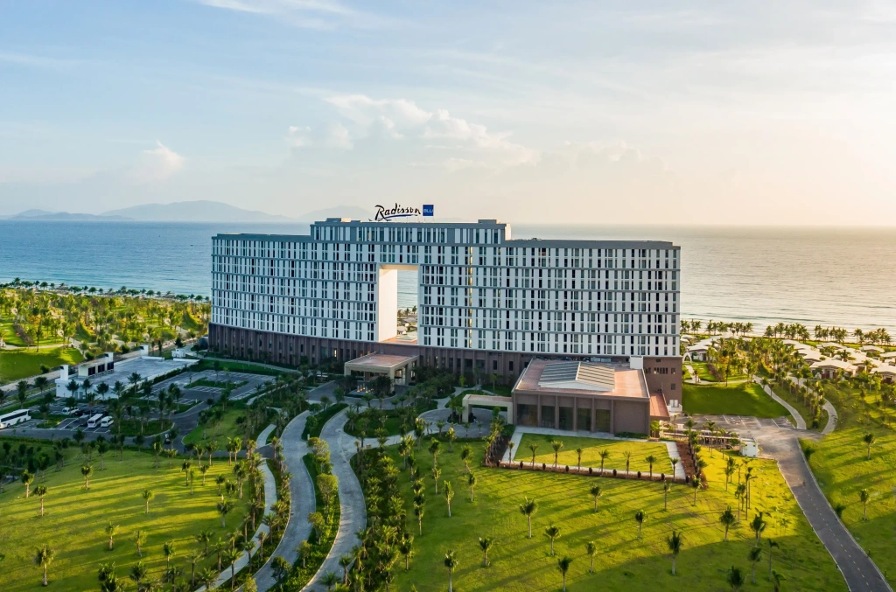
Radisson Blu Resort Cam Ranh
Визитка
| |
|---|
| Категория | 5★, beachfront-резорт |
| Пляж | Бай Дай (Long Beach), собственный участок |
| Номера | комнаты и виллы с видом на океан; есть виллы с собственным бассейном |
| Заселение / выезд | обычно 15:00 / 12:00 (сверь с ваучером) |
| Расстояния | аэропорт CXR ~15–20 мин, Нячанг ~45–60 мин |
Что есть на территории
- Бассейны — большой главный бассейн-комплекс у моря (+ детская зона). Полотенца выдаются.
- Пляж — шезлонги и зонты бесплатно, вход пологий; сентябрь — возможны волны, купайся в отмеченной зоне.
- Еда: ресторан all-day, специализированный ресторан (стейк/морепродукты), пляжный бар, круглосуточный рум-сервис. Завтрак — шведский стол; включён он в тариф или нет — проверь в ваучере.
- Спорт и SPA: фитнес-зал, спа-центр с массажами, теннисные корты.
- Детский клуб Kids Club, бесплатные велосипеды, бесплатный Wi-Fi (ловит и на пляже).
- Сервисы: обмен валюты на ресепшене, экскурсионное бюро, прачечная, трансфер в аэропорт (заказ через консьержа), прокат водного инвентаря (кайт/SUP/каяки — сезонно, по запросу).
Депозит при заселении
Депозит (залог) при чек-ине — да. Размер: 1 000 000 VND за номер за ночь (≈ $40–50). За 8 ночей наберётся ~8 млн VND (≈ $310) — наличными или блокировкой на иностранной карте. Сумма возвращается при выезде, если не было допрасходов. Держи наличные доллары под рукой (карты РФ не подходят), возьми чек/квитанцию о депозите и не выбрасывай до выезда. Точный способ оплаты уточни на ресепшене при заселении.
Практические советы
- Спроси на ресепшене расписание шаттла в Нячанг — у резорта бывают рейсы по расписанию, дешевле такси.
- Шезлонги у бассейна занимают с утра — для «спокойного» места приходи до 09:00.
- Полотенца по карточкам — не потеряй карточку (иначе спишут с депозита).
- В номере чайник/вода; пить — бутилированную воду (бесплатная в номере пополняется ежедневно).
- Персонал говорит по-английски; в приложении переводчик (раздел 10) пригодится на всякий случай.
6. Нячанг: что посетить
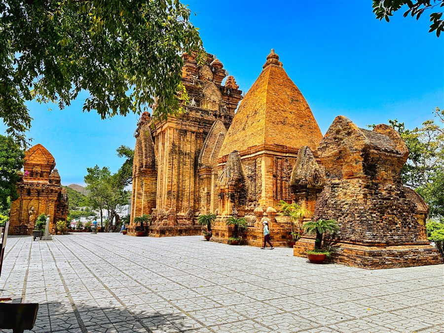
Башни По Нагар — главная достопримечательность Нячанга
Город (полдня–день, с трансфером из отеля)
- Башни По Нагар (Po Nagar) — храмовый комплекс чамов VII–XII вв., ~30 тыс. VND. Главная достопримечательность.
- Пагода Лонг Шон (Long Son) — белый Будда, сидящий на холме, вход бесплатный.
- Кафедральный собор (Christ the King Cathedral) — на холме, красивая готика.
- Океанографический музей (Nha Trang Oceanography Institute) — аквариум, скелет кита.
- Музей Александра Йерсена — интересный, если любишь историю науки.
- Башня Трам Хуонг (Trầm Hương Tower) и променад по ул. Чан Фу (Tran Phu) — главная набережная города, вечерняя прогулка.
- Рынок Дам (Cho Dam) и ночной рынок Нячанга — фрукты, сувениры, уличная еда.
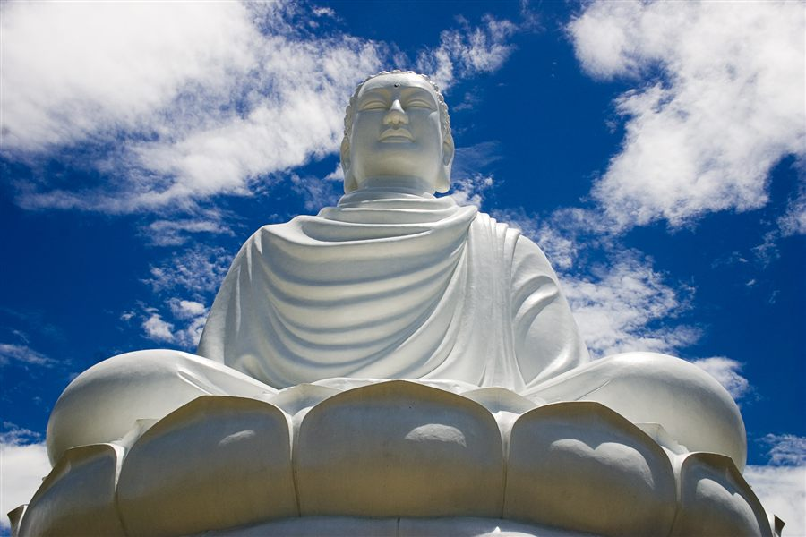
Белый Будда, пагода Лонг Шон
Острова (снорклинг / лодочные туры)
- Хон Мун (Hon Mun) — морской заповедник, лучший снорклинг.
- Хон Там (Hon Tam) — пляжный остров, лежаки, спокойное море.
- Винперл / Хон Че (VinWonders) — парк развлечений + канатная дорога через море (~3 км, самая длинная морская канатная дорога). Если хочешь день «не только пляж».
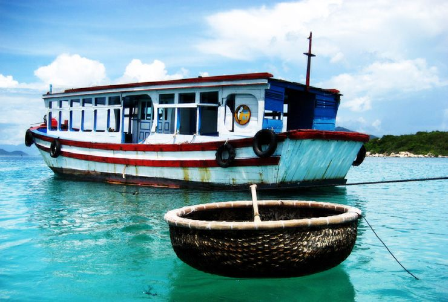
Круглые лодки-корзины — символ рыбацких деревень
Природа
- Водопады Ба Хо (Ba Ho) — купание в каскадах, ~25 км от города.
- Пляж Док Лет (Doc Let) — белый песок, мелкое море, ~50 км на север.
7. Где погулять
- Променад Тран Фу вечером — светящиеся фонтаны, уличные артисты, мороженое; главное место вечерних прогулок.
- Парк Йерсена у моря и площадь с башней Трам Хуонг.
- Ночной рынок (центр) — атмосферно после заката.
- Район европейского квартала (улицы Hung Vuong, Nguyen Thien Thuat) — кафе и рестораны.
- Вокруг отеля: сам пляж Бай Дай — километры песка, прогулки на закате.
8. Передвижение и Grab
8.1. Что такое Grab
Grab — это «Uber» Юго-Восточной Азии, во Вьетнаме это приложение №1. Через него заказываешь:
- GrabCar — обычная машина (кондиционер, безопасно);
- GrabBike — мотобайк (дешевле всего, шлем даёт водитель; если ты один и без багажа — самый быстрый способ);
- GrabFood / GrabMart — доставка еды и товаров из магазинов.
Зачем он нужен: цена фиксируется в приложении до поездки, водителя видно на карте, маршрут записан, никто не «накручивает» счётчик и не возит кругами. Уличное такси в Нячанге часто заламывает цену туристам — Grab это решает.
8.2. Как настроить (по шагам)
- Скачай Grab из App Store / Google Play. Из России магазин может не отдавать приложение — тогда качай после прилёта через местный интернет (или заранее через VPN).
- Регистрация: нужен номер телефона, на который придёт SMS-код.
- Лучший вариант: местная вьетнамская SIM (если брал её) — код придёт на неё.
- eSIM данных (Airalo) не имеет номера — код не придёт. Тогда регистрируйся на российский номер, пока он ловит SMS (SMS-роуминг работает, даже если выключены мобильные данные — проверь, что роуминг включён в настройках).
- Оплата: добавь «Cash» (наличные) — это основной способ во Вьетнаме. Иностранные карты в Grab привязываются плохо, а российские — не работают. После поездки платишь донгами ровно ту сумму, что показало приложение (сдачи у водителей часто нет — носи купюры помельче).
- Интерфейс (главный экран после регистрации):
- сверху поле «Where are you going?» — пиши место назначения. Русского нет, но есть английский интерфейс: отель лучше вводить как «Radisson Blu Resort Cam Ranh» или вставлять точку из Google Maps;
- ниже строка «From» — точка подачи. По умолчанию — текущая геопозиция. Проверь, что пин стоит у входа в отель, а не на пляже сзади;
- внизу — переключатель вкладок: Car / Bike / Food и др. Для каждого показана цена заранее (например «₫ 210 000»);
- жмёшь Book — и видишь карту с машиной, номером и фото водителя;
- после поездки приложение предложит чаевые (можно скипнуть) и оценку.
Официальные скриншоты Grab из App Store (порядок экранов: поле назначения → выбор тарифа с ценой → поиск водителя → машина едет → поездка → оплата):
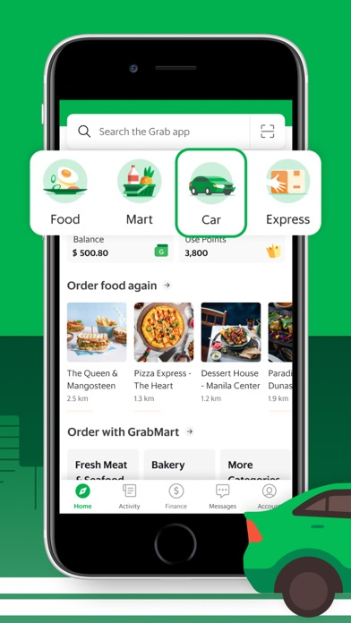
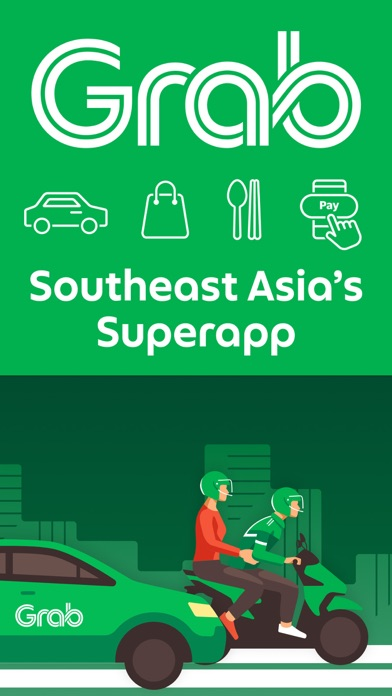
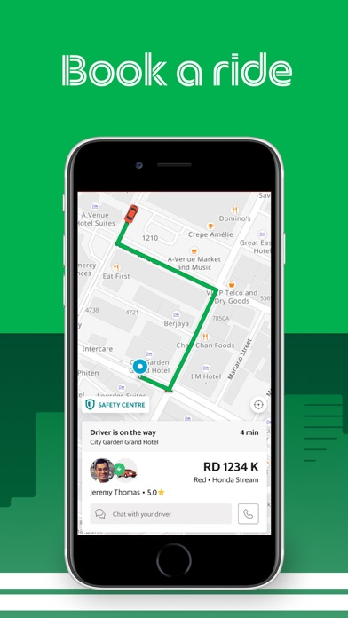
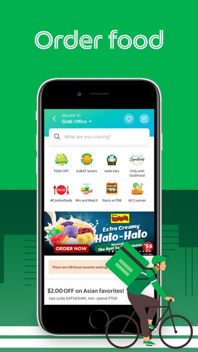
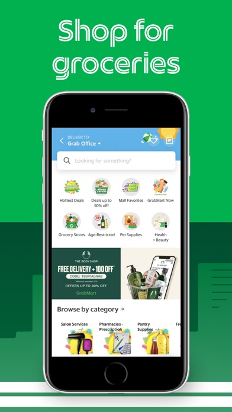
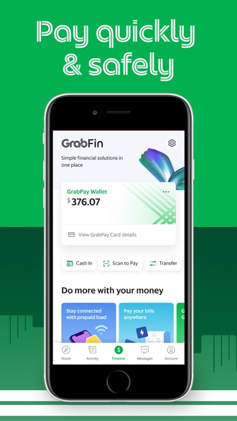
- Чат с водителем — внутри приложения есть автоперевод. Полезная фраза: «I'm at the main lobby» / «Tôi ở sảnh chính» (той о шань тинь).
8.3. Цены и логистика из Radisson Blu (Бай Дай)
| Маршрут | GrabCar, VND | ~ Руб. | Время |
|---|
| Аэропорт Камрань (CXR) → отель | ~200–300 тыс. | 700–1000 | 15–20 мин |
| Отель → центр Нячанга | ~300–450 тыс. | 1000–1500 | 45–60 мин |
| По Нячангу (внутри города) | 30–80 тыс. | 100–270 | 5–20 мин |
| Отель → I-Resort / грязевые ванны | ~250–350 тыс. | 800–1200 | 30–40 мин |
- Трансфер отеля Радиссона (если заказывать у консьержа) обычно дороже Grab в 1.5–2 раза, но машину подадут точно ко времени — удобно для вылета рано утром.
- Grab в аэропорту работает: после выхода — зона ожидания Grab (обычно чуть дальше выхода, есть указатели). Или проще: закажи трансфер отеля заранее — после 10+ часов полёта это комфортнее.
- Если планируешь пару дней подряд в Нячанге — водители GrabCar охотно договариваются на «туда-обратно» за наличные мимо приложения (торгуйся: круг ~700 тыс. VND).
8.4. Альтернативы Grab
- Xanh SM — такси на электромобилях VinFast, во Вьетнаме очень популярно, приложение на английском, оплата наличными, цены сравнимы с Grab. Хороший запасной вариант.
- Be — второй по популярности агрегатор, часто чуть дешевле Grab. Интерфейс местами на вьетнамском.
- Такси по счётчику: Mai Linh (зелёные) и Vinasun (белые). Внутри города нормально; на дальние (отель→аэропорт) заранее договаривайся о фиксированной цене.
- Мотобайк в аренду: 120–200 тыс. VND/день, нужны права (международные для мотокатегории) и шлем. Полиция в Нячанге иногда устраивает проверки у туристов — если нет прав, рискуешь штрафом. Для спокойного отдыха лучше Grab.
- Шаттлы отеля: спроси на ресепшн про бесплатные/платные шаттлы в Нячанг — у резортов Бай Дай такое бывает по расписанию.
9. Связь (eSIM)
Вариант 1 — eSIM (рекомендую, если телефон поддерживает eSIM):
- Airalo — Вьетнам (сеть VNPT): безлимит 7 дней — $27, 10 дней — $34.50, 15 дней — $48. Купить и установить заранее из дома; интернет включится по прилёту. На 8 дней подходит пакет на 10 дней.
- Альтернативы: Holafly, Yesim, Drimsim (у Drimsim оплата по мегабайтам — выгодно, если интернет нужен редко).
- Данные в основном без звонков — звонки через WhatsApp/Telegram.
Вариант 2 — местная SIM (дешевле):
- В аэропорту Камрань или салонах Viettel / Vinaphone / Mobifone: ~250–400 тыс. VND (~800–1300 руб.) за 30 дней с ~5–10 ГБ/день или безлимитом.
- Нужен паспорт для регистрации. Viettel ловит лучше всех, в т.ч. на островах.
Важно: карты, банки и мессенджеры через российский номер — оставь роуминг основной SIM выключенным, включи «данные только через eSIM». VPN для части привычных сервисов может пригодиться, но заблокированных сайтов во Вьетнаме минимум.
10. Переводчик (русский ↔ вьетнамский)
Главный инструмент — Google Translate (бесплатно, поддерживает вьетнамский отлично):
- Офлайн-пакет. Скачай вьетнамский пакет заранее (в приложении: Настройки → Офлайн-перевод → Вьетнамский). Тогда перевод текста и камеры работает даже без интернета.
- Камера. Наводишь на меню/вывеску/упаковку — текст переводится прямо на экране. Во Вьетнаме без этого меню не прочитать. Тот же трюк умеет Google Lens (есть встроенная иконка в Google Translate).
- Режим разговора. Говоришь по-русски — телефон произносит по-вьетнамски, и наоборот. Идеально для такси, рынка, аптеки. Покажи экран продавцу, если шумно.
- Фраза для старта диалога: переведи заранее «Подскажите, пожалуйста…» и показывай результат собеседнику.
Запасные варианты:
- Yandex Translate — интерфейс на русском, хорошее качество для пары русский–вьетнамский. Работает и за границей.
- Microsoft Translator — тоже поддерживает пару RU↔VI, есть офлайн-пакеты и режим разговора.
- DeepL НЕ подходит — вьетнамского в нём нет.
Лайфхаки:
- В туристических местах Нячанга многие знают базовый английский, но на рынках и в маленьких кафе без переводчика сложно.
- Установи и проверь приложение до вылета: дай ему доступ к камере и микрофону заранее.
- Во время поездки на байке/такси просто показывай экран с переводом — это принято и никто не удивляется.
11. Чек-лист перед вылетом
- Загранпаспорт: срок действия не менее 6 месяцев на дату въезда.
- Виза: для граждан РФ въезд без визы до 45 дней (проверь актуальность на сайте консульства перед вылетом).
- Наличные USD (купюры $50/$100, новые, без повреждений) + немного рублей про запас.
- eSIM куплен и установлен (или план купить SIM в аэропорту).
- Установить Grab и зарегистрироваться.
- Установить Google Translate и скачать офлайн-пакет вьетнамского.
- Копии документов в облако (паспорт, билеты, страховка).
- Медицинская страховка с покрытием Вьетнама (проверь, включены ли экстренные случаи — это требование въезда не всегда проверяют, но лучше иметь).
- Бронь отеля и обратный билет — распечатать/сохранить офлайн.
- Адаптер: во Вьетнаме розетки A/C/EU (220V) — российские вилки в основном подходят, но евро-розетки — да; переходник на всякий случай.
- Аптечка: пластыри, жаропонижающее, сорбенты, репеллент, SPF 50.
- Уточнить время трансфера на вылет (SU 295) у гида/ресепшена — 14 сентября.
- Лёгкий дождевик + сменная обувь.
12. Полезные фразы (вьетнамский)
| Русский | Вьетнамский | Как читать |
|---|
| Здравствуйте | Xin chào | син чао |
| Спасибо | Cảm ơn | кам он |
| Сколько стоит? | Bao nhiêu tiền? | бау ниеу тьен? |
| Слишком дорого | Đắt quá | дат куа |
| Вкусно | Ngon | нгон |
| Счёт, пожалуйста | Tính tiền | тинь тьен |
| Не остро | Không cay | хонг кай |
13. Прочее
- Тайфуны в сентябре редки, но возможны — следи за прогнозом; при штормовом предупреждении не купайся на диких пляжах (красные флаги).
- Питьевая вода — только бутилированная; лёд в нормальных кафе безопасен.
- Торг уместен на рынках и с уличными торговцами, не в магазинах с ценниками.
- Время: GMT+7, разница с Москвой +4 часа.
- Валюта в чаевых: чаевые не обязательны, но 20–50 тыс. VND горничной/официанту приветствуются.
- В сентябре мало туристов — цены на экскурсии и трансферы торгуются легче.